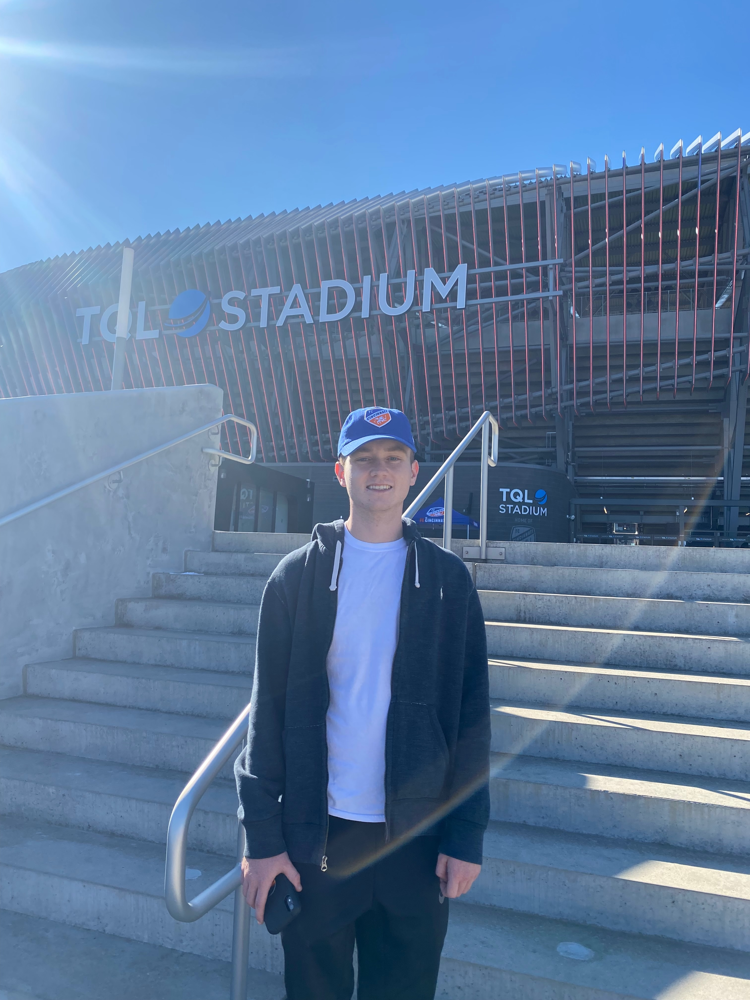

First Post: Who the Heck am I?
Who the Heck am I?
To begin, well, here is an image of me at TQL Stadium against Atlanta United when we were still under the reign of Tyrone Marshall, who was the interim following the mighty Jaap Stam (I am a United fan). This was on fan appreciation day, the last game of the season, mind you. I got to witness the passing of the greatest trophy in MLS: The Wooden Spoon.
All jokes aside, this was my first game in person. My father, who isn’t a fan of soccer, asked what significance the spoon had, so I promptly explained that it was a sign of failure. All that to say, I have been a fan for a few years and am not just a glory hunter, haha.
Anyways, a bit more about me from a footy perspective. I am a proud Manchester United fan and have been for what feels like 10 long years (I know we are currently 15th). For the first 6-7 years of my football fandom, I was what many would call a “Euro Snob”—that is, I only cared to watch the European leagues and deemed MLS an inferior, poor-quality league.
While yes, the quality of the Premier League is some of, if not the best, in the world, I realized that many claims against MLS were baseless. Despite what many say, the league has clubs with deep-rooted fan culture that is not simply plastic American franchise-style culture. I also realized that while older players do come to the league in the twilight of their careers, many young players build their careers here (Chris Richards, Tanner Tessmann, etc.) and now play for notable teams in Europe.
I finally realized that though the rest of the world deems our culture “cringe” and our chants lacking, this is our league. It is the league I am geographically closest to, and it is what we have. Despite its issues (broadcasting, DP rules, etc.), MLS is improving year after year. Cincinnati is the team closest to me, and I had grown up going to Reds games and loving the city. The choice to support FCC was easy, despite their on-field performance at the time.
Currently, I am a Master’s student in Biostatistics. I spend most of my time writing mathematical code inside a programming language known as R. I have always wanted a way to express my thoughts on the game I love but never quite found the right outlet. This site lies at the intersection of my educational and professional goals and my passion for footy.
What to Expect?
I plan on posting match reports with plots I create inside R each week, diving into the team’s performance in past games. I am currently working on the report for our home opener vs. NYRB right now and hope to have it up before our next match on Wednesday. The depth of the reports may vary week to week as the semester ebbs and flows.
If you choose to read the reports, I hope you enjoy! All for Cincy! I plan on posting match reports with plots I create inside R each week, diving into the team’s performance in past games. I am currently working on the report for our home opener vs. NYRB right now and hope to have it up before our next match on Wednesday. The depth of the reports may vary week to week as the semester ebbs and flows.
If you choose to read the reports, I hope you enjoy! All for Cincy!